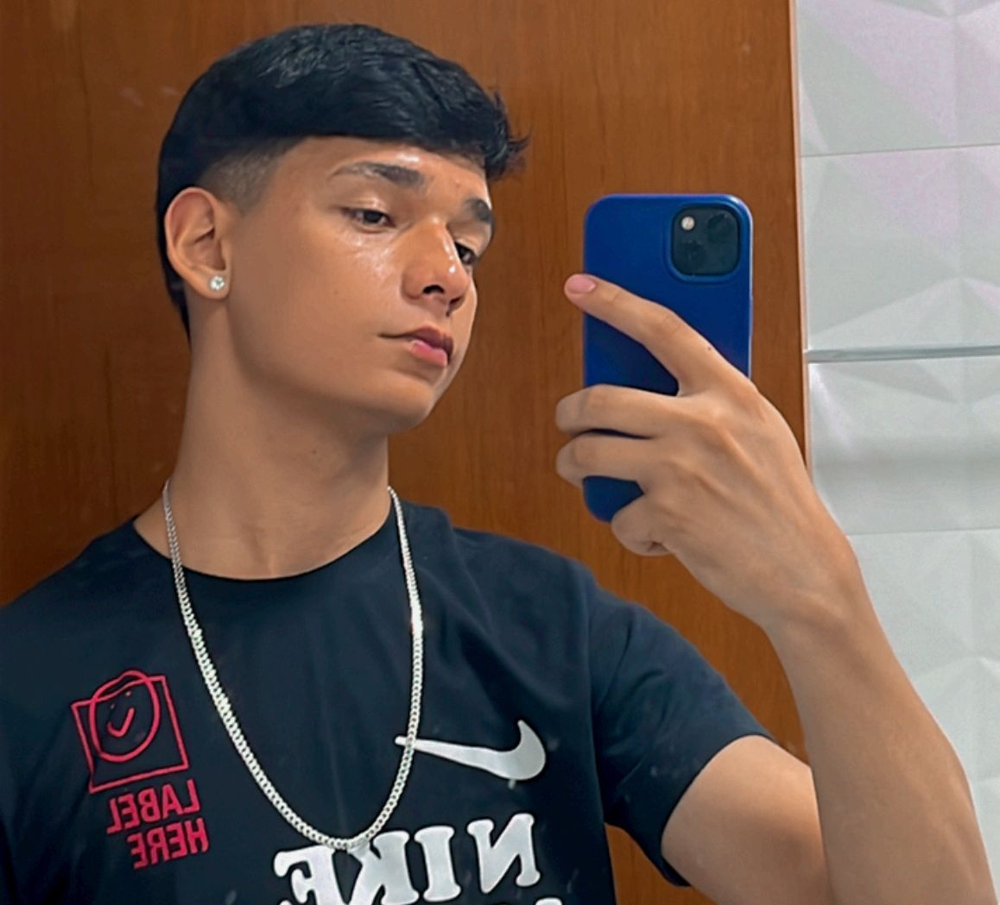
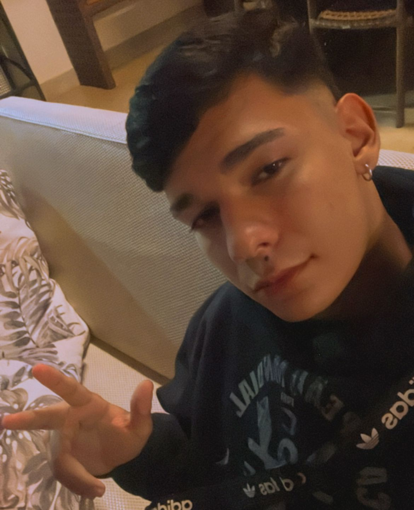

| Breve Biografia |
Introdução | Objetivos | experiências | Breve biografia |
|---|---|---|---|---|
|  | Breve Biografia Pedro Miguel nasceu em 01 de dezembro de 2005 na cidade de Brasilia-DF. Formou-se no ensino médio no Centro educacional Católica de Brasília e atualmente cursa Engenharia de Software na UCB. Atualmente, Pedro atua como vendedor na loja do seu pai para ir aprendendo os procedimentos e ganhando experiência, onde continua a desenvolver e aplicar seus conhecimentos. Em seu tempo livre, gosta de jogar futebol, jogar jogos de videogame, dirigir carros, consumir filmes de qualidade no cinema e ir para igreja, sempre buscando maneiras de equilibrar a vida profissional e pessoal. Pedro Miguel é reconhecido por sua dedicação, competência e contribuição. |
|||
|  | ||||